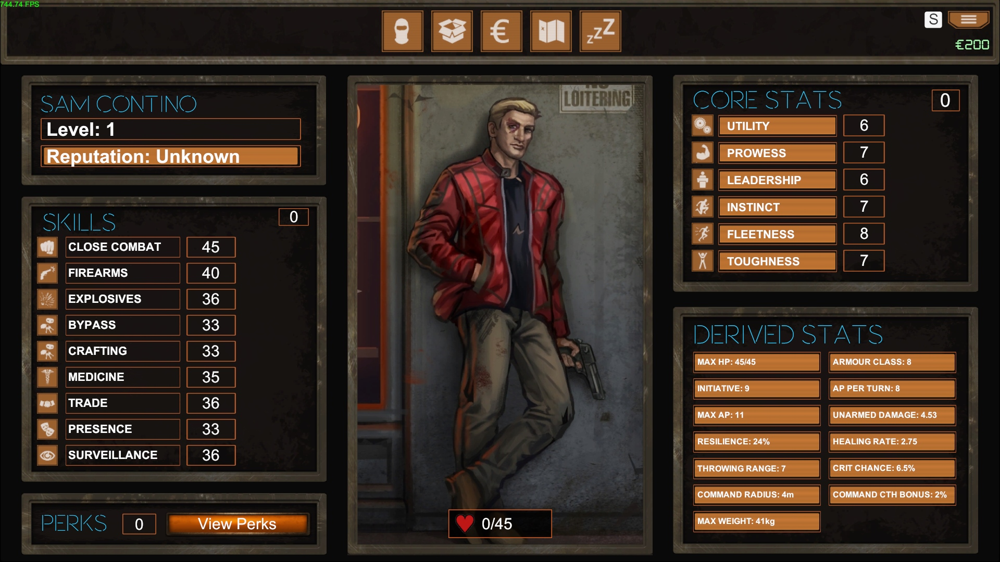

Player Stats
Skills
Education
Work Experience
Noteworthy Deeds
Resume
If you'd prefer to see all this information in a traditional resume format, feel free to use the buttons to download a copy of my resume!
2-Page Resume Extended ResumeIf you'd prefer to see all this information in a traditional resume format, feel free to use the buttons to download a copy of my resume!
2-Page Resume Extended Resume